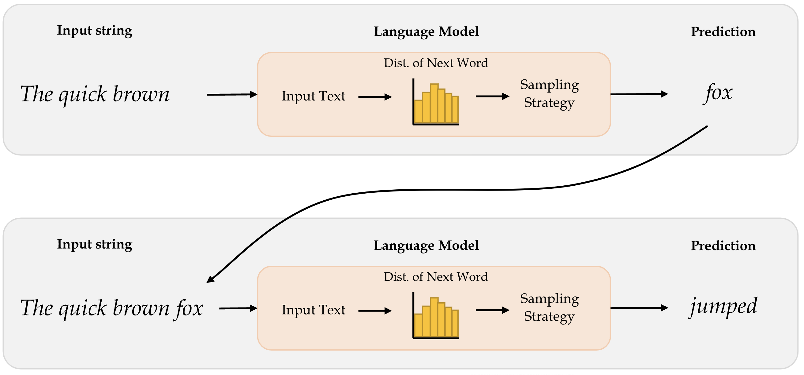
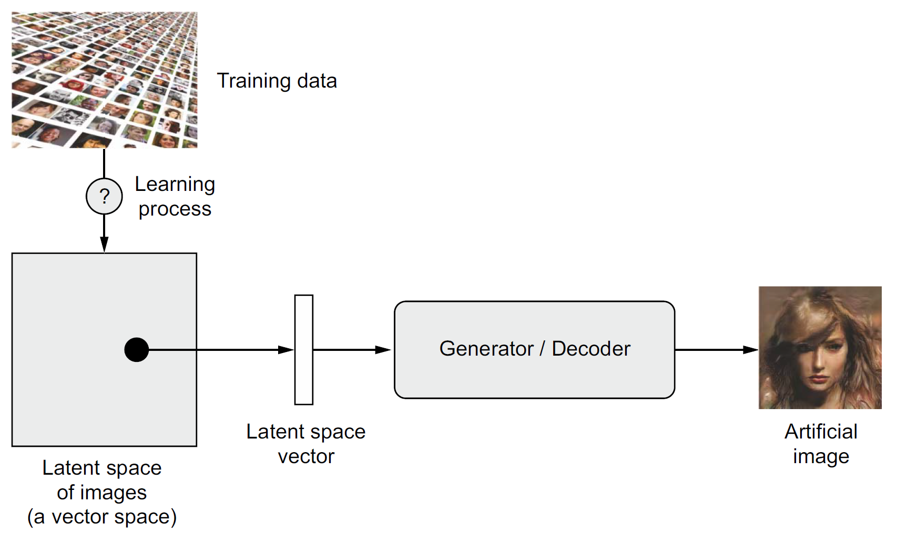

Generative Networks
ACTL3143 & ACTL5111 Deep Learning for Actuaries
Lecture Outline
- Text Generation
- Image Generation
- Autoencoders
- Generative adversarial networks
Load packages
Text Generation
Generative deep learning
- Using AI as augmented intelligence rather than artificial intelligence.
- Use of deep learning to augment creative activities such as writing, music and art, to generate new things.
- Some applications: text generation, deep dreaming, neural style transfer, variational autoencoders and generative adversarial networks.
Text generation
Generating sequential data is the closest computers get to dreaming.
- Generate sequence data: Train a model to predict the next token or next few tokens in a sentence, using previous tokens as input.
- A network that models the probability of the next tokens given the previous ones is called a language model.
Source: Alex Graves (2013), Generating Sequences With Recurrent Neural Networks
Word-level language model
Diagram of a word-level language model.
Source: Marcus Lautier (2022).
Character-level language model

Diagram of a character-level language model (Char-RNN)
Source: Tensorflow tutorial, Text generation with an RNN.
Useful for speech recognition
| RNN output | Decoded Transcription |
|---|---|
| what is the weather like in bostin right now | what is the weather like in boston right now |
| prime miniter nerenr modi | prime minister narendra modi |
| arther n tickets for the game | are there any tickets for the game |
Source: Hannun et al. (2014), Deep Speech: Scaling up end-to-end speech recognition, arXiv:1412.5567, Table 1.
Generating Shakespeare I
ROMEO:
Why, sir, what think you, sir?
AUTOLYCUS:
A dozen; shall I be deceased.
The enemy is parting with your general,
As bias should still combit them offend
That Montague is as devotions that did satisfied;
But not they are put your pleasure.
Source: Tensorflow tutorial, Text generation with an RNN.
Generating Shakespeare II
DUKE OF YORK:
Peace, sing! do you must be all the law;
And overmuting Mercutio slain;
And stand betide that blows which wretched shame;
Which, I, that have been complaints me older hours.
LUCENTIO:
What, marry, may shame, the forish priest-lay estimest you, sir,
Whom I will purchase with green limits o’ the commons’ ears!
Source: Tensorflow tutorial, Text generation with an RNN.
Generating Shakespeare III
ANTIGONUS:
To be by oath enjoin’d to this. Farewell!
The day frowns more and more: thou’rt like to have
A lullaby too rough: I never saw
The heavens so dim by day. A savage clamour!
[Exit, pursued by a bear]
Sampling strategy
- Greedy sampling will choose the token with the highest probability. It makes the resulting sentence repetitive and predictable.
- Stochastic sampling: if a word has probability 0.3 of being next in the sentence according to the model, we’ll choose it 30% of the time. But the result is still not interesting enough and still quite predictable.
- Use a softmax temperature to control the randomness. More randomness results in more surprising and creative sentences.
Softmax temperature
- The softmax temperature is a parameter that controls the randomness of the next token.
- The formula is: \text{softmax}_\text{temperature}(x) = \frac{\exp(x / \text{temperature})}{\sum_i \exp(x_i / \text{temperature})}
“I am a” …

Idea inspired by Mehta (2023), The need for sampling temperature and differences between whisper, GPT-3, and probabilistic model’s temperature
Generating Laub (temp = 0.01)
In today’s lecture we will be different situation. So, next one is what they rective that each commit to be able to learn some relationships from the course, and that is part of the image that it’s very clese and black problems that you’re trying to fit the neural network to do there instead of like a specific though shef series of layers mean about full of the chosen the baseline of car was in the right, but that’s an important facts and it’s a very small summary with very scrort by the beginning of the sentence.
Generating Laub (temp = 0.25)
In today’s lecture we will decreas before model that we that we have to think about it, this mightsks better, for chattely the same project, because you might use the test set because it’s to be picked up the things that I wanted to heard of things that I like that even real you and you’re using the same thing again now because we need to understand what it’s doing the same thing but instead of putting it in particular week, and we can say that’s a thing I mainly link it’s three columns.
Generating Laub (temp = 0.5)
In today’s lecture we will probably the adw n wait lots of ngobs teulagedation to calculate the gradient and then I’ll be less than one layer the next slide will br input over and over the threshow you ampaigey the one that we want to apply them quickly. So, here this is the screen here the main top kecw onct three thing to told them, and the output is a vertical variables and Marceparase of things that you’re moving the blurring and that just data set is to maybe kind of categorical variants here but there’s more efficiently not basically replace that with respect to the best and be the same thing.
Generating Laub (temp = 1)
In today’s lecture we will put it different shates to touch on last week, so I want to ask what are you object frod current. They don’t have any zero into it, things like that which mistakes. 10 claims that the average version was relden distever ditgs and Python for the whole term wo long right to really. The name of these two options. There are in that seems to be modified version. If you look at when you’re putting numbers into your, that that’s over. And I went backwards, up, if they’rina functional pricing working with.
Generating Laub (temp = 1.5)
In today’s lecture we will put it could be bedinnth. Lowerstoriage nruron. So rochain the everything that I just sGiming. If there was a large. It’s gonua draltionation. Tow many, up, would that black and 53% that’s girter thankAty will get you jast typically stickK thing. But maybe. Anyway, I’m going to work on this libry two, past, at shit citcs jast pleming to memorize overcamples like pre pysing, why wareed to smart a one in this reportbryeccuriay.
Generate the most likely sequence

An example sequence-to-sequence chatbot model.
Source: Payne (2021), What is beam search, Width.ai blog.
Beam search

Illustration of a beam search.
Source: Doshi (2021), Foundations of NLP Explained Visually: Beam Search, How It Works, towardsdatascience.com.
Transformers
Transformer architecture
GPT makes use of a mechanism known as attention, which removes the need for recurrent layers (e.g., LSTMs). It works like an information retrieval system, utilizing queries, keys, and values to decide how much information it wants to extract from each input token.
Attention heads can be grouped together to form what is known as a multihead attention layer. These are then wrapped up inside a Transformer block, which includes layer normalization and skip connections around the attention layer. Transformer blocks can be stacked to create very deep neural networks.
Source: David Foster (2023), Generative Deep Learning, 2nd Edition, O’Reilly Media, Chapter 9.
Transformer architecture reference
🤗 Transformers package
import transformers
from transformers import pipeline
generator = pipeline(task="text-generation", model="gpt2", revision="6c0e608")/home/plaub/miniconda3/envs/ai2023/lib/python3.11/site-packages/torch/_utils.py:776: UserWarning: TypedStorage is deprecated. It will be removed in the future and UntypedStorage will be the only storage class. This should only matter to you if you are using storages directly. To access UntypedStorage directly, use tensor.untyped_storage() instead of tensor.storage()
return self.fget.__get__(instance, owner)()transformers.set_seed(1)
print(generator("It's the holidays so I'm going to enjoy")[0]["generated_text"])Setting `pad_token_id` to `eos_token_id`:50256 for open-end generation.It's the holidays so I'm going to enjoy playing in there."
Advertisement
But how many other holiday-goers would want to join his team?
"They wouldn't know if I would be there, not that I'mtransformers.set_seed(1337)
print(generator("It's the holidays so I'm going to enjoy")[0]["generated_text"])Setting `pad_token_id` to `eos_token_id`:50256 for open-end generation.It's the holidays so I'm going to enjoy myself. I don't want to be a full-grown man when I get to get pregnant (if I didn't, I would never take it). I want to learn and find my own waysReading the course profile
context = """
StoryWall Formative Discussions: An initial StoryWall, worth 2%, is due by noon on June 3. The following StoryWalls are worth 4% each (taking the best 7 of 9) and are due at noon on the following dates:
The project will be submitted in stages: draft due at noon on July 1 (10%), recorded presentation due at noon on July 22 (15%), final report due at noon on August 1 (15%).
As a student at UNSW you are expected to display academic integrity in your work and interactions. Where a student breaches the UNSW Student Code with respect to academic integrity, the University may take disciplinary action under the Student Misconduct Procedure. To assure academic integrity, you may be required to demonstrate reasoning, research and the process of constructing work submitted for assessment.
To assist you in understanding what academic integrity means, and how to ensure that you do comply with the UNSW Student Code, it is strongly recommended that you complete the Working with Academic Integrity module before submitting your first assessment task. It is a free, online self-paced Moodle module that should take about one hour to complete.
StoryWall (30%)
The StoryWall format will be used for small weekly questions. Each week of questions will be released on a Monday, and most of them will be due the following Monday at midday (see assessment table for exact dates). Students will upload their responses to the question sets, and give comments on another student's submission. Each week will be worth 4%, and the grading is pass/fail, with the best 7 of 9 being counted. The first week's basic 'introduction' StoryWall post is counted separately and is worth 2%.
Project (40%)
Over the term, students will complete an individual project. There will be a selection of deep learning topics to choose from (this will be outlined during Week 1).
The deliverables for the project will include: a draft/progress report mid-way through the term, a presentation (recorded), a final report including a written summary of the project and the relevant Python code (Jupyter notebook).
Exam (30%)
The exam will test the concepts presented in the lectures. For example, students will be expected to: provide definitions for various deep learning terminology, suggest neural network designs to solve risk and actuarial problems, give advice to mock deep learning engineers whose projects have hit common roadblocks, find/explain common bugs in deep learning Python code.
"""Question answering
{'score': 0.5019665956497192, 'start': 2092, 'end': 2095, 'answer': '30%'}{'score': 0.21276019513607025,
'start': 1778,
'end': 1791,
'answer': 'deep learning'}{'score': 0.5296485424041748,
'start': 1319,
'end': 1335,
'answer': 'Monday at midday'}ChatGPT is Transformer + RLHF
At the time of writing, there is no official paper that describes how ChatGPT works in detail, but from the official blog post we know that it uses a technique called reinforcement learning from human feedback (RLHF) to fine-tune the GPT-3.5 model.
Source: David Foster (2023), Generative Deep Learning, 2nd Edition, O’Reilly Media, Chapter 9.
ChatGPT internals

It uses a fair bit of human feedback
Source: OpenAI blog.
ChatGPT
While ChatGPT still has many limitations (such as sometimes “hallucinating” factually incorrect information), it is a powerful example of how Transformers can be used to build generative models that can produce complex, long-ranging, and novel output that is often indistinguishable from human-generated text. The progress made thus far by models like ChatGPT serves as a testament to the potential of AI and its transformative impact on the world.
Source: David Foster (2023), Generative Deep Learning, 2nd Edition, O’Reilly Media, Chapter 9.
Recommended reading
- The Verge (2022), The Great Fiction of AI: The strange world of high-speed semi-automated genre fiction
- Vaswani et al. (2017), Attention Is All You Need, NeurIPS
- Bommasani et al. (2021), On the Opportunities and Risks of Foundation Models
- Gary Marcus (2022), Deep Learning Is Hitting a Wall, Nautilus article
- SDS 564, Clem Delangue on Hugging Face and Transformers
- SDS 559, GPT-3 for Natural Language Processing
- Computerphile (2019), AI Language Models & Transformers (20m)
- Computerphile (2020), GPT3: An Even Bigger Language Model (25m)
- Nicholas Renotte (2021), AI Blog Post Summarization with Hugging Face Transformers… (33m)
- Seattle Applied Deep Learning (2019), LSTM is dead. Long Live Transformers! (28m)
Image Generation
Reverse-engineering a CNN
A CNN is a function f_{\boldsymbol{\theta}}(\mathbf{x}) that takes a vector (image) \mathbf{x} and returns a vector (distribution) \widehat{\mathbf{y}}.
Normally, we train it by modifying \boldsymbol{\theta} so that
\boldsymbol{\theta}^*\ =\ \underset{\boldsymbol{\theta}}{\mathrm{argmin}} \,\, \text{Loss} \bigl( f_{\boldsymbol{\theta}}(\mathbf{x}), \mathbf{y} \bigr).
However, it is possible to not train the network but to modify \mathbf{x}, like
\mathbf{x}^*\ =\ \underset{\mathbf{x}}{\mathrm{argmin}} \,\, \text{Loss} \bigl( f_{\boldsymbol{\theta}}(\mathbf{x}), \mathbf{y} \bigr).
This is very slow as we do gradient descent every single time.
Adversarial examples

A demonstration of fast adversarial example generation applied to GoogLeNet on ImageNet. By adding an imperceptibly small vector whose elements are equal to the sign of the elements of the gradient of the cost function with respect to the input, we can change GoogLeNet’s classification of the image.
Source: Goodfellow et al. (2015), Explaining and Harnessing Adversarial Examples, ICLR.
Adversarial stickers

Adversarial stickers.
Source: The Verge (2018), These stickers make computer vision software hallucinate things that aren’t there.
Adversarial text
“TextAttack 🐙 is a Python framework for adversarial attacks, data augmentation, and model training in NLP”

Demo
Deep Dream

Deep Dream is an image-modification program released by Google in 2015.
Source: Wikipedia, DeepDream page.
DeepDream
- Even though many deep learning models are black boxes, convnets are quite interpretable via visualization. Some visualization techniques are: visualizing convnet outputs shows how convnet layers transform the input, visualizing convnet filters shows what visual patterns or concept each filter is receptive to, etc.
- The activations of the first few layers of the network carries more information about the visual contents, while deeper layers encode higher, more abstract concepts.
DeepDream
- Each filter is receptive to a visual pattern. To visualize a convnet filter, gradient ascent is used to maximize the response of the filter. Gradient ascent maximize a loss function and moves the image in a direction that activate the filter more strongly to enhance its reading of the visual pattern.
- DeepDream maximizes the activation of the entire convnet layer rather than that of a specific filter, thus mixing together many visual patterns all at once.
- DeepDream starts with an existing image, latches on to preexisting visual patterns, distorting elements of the image in a somewhat artistic fashion.
Original

A sunny day on the Mornington peninsula.
Transformed

Deep-dreaming version.
Generated by Keras’ Deep Dream tutorial.
Neural style transfer
Applying the style of a reference image to a target image while conserving the content of the target image.
An example neural style transfer.
Source: François Chollet (2021), Deep Learning with Python, Second Edition, Figure 12.9.
Goal of NST
What the model does:
Preserve content by maintaining similar deeper layer activations between the original image and the generated image. The convnet should “see” both the original image and the generated image as containing the same things.
Preserve style by maintaining similar correlations within activations for both low level layers and high-level layers. Feature correlations within a layer capture textures: the generated image and the style-reference image should share the same textures at different spatial scales.
A wanderer in Greenland
Content

Style

Source: Laub (2018), On Neural Style Transfer, Blog post.
A wanderer in Greenland II


Question
How would you make this faster for one specific style image?
Source: Laub (2018), On Neural Style Transfer, Blog post.
A new style image

Hokusai’s Great Wave off Kanagawa
Source: Laub (2018), On Neural Style Transfer, Blog post.
A new content image

The seascape in Qingdao
Source: Laub (2018), On Neural Style Transfer, Blog post.
Another neural style transfer

The seascape in Qingdao in the style of Hokusai’s Great Wave off Kanagawa
Source: Laub (2018), On Neural Style Transfer, Blog post.
Why is this important?
Taking derivatives with respect to the input image can be a first step toward explainable AI for convolutional networks.
Autoencoders
Autoencoder
An autoencoder takes a data/image, maps it to a latent space via an encoder module, then decodes it back to an output with the same dimensions via a decoder module.

Schematic of an autoencoder.
Source: Marcus Lautier (2022).
Autoencoder II
- An autoencoder is trained by using the same image as both the input and the target, meaning an autoencoder learns to reconstruct the original inputs. Therefore it’s not supervised learning, but self-supervised learning.
- If we impose constraints on the encoders to be low-dimensional and sparse, the input data will be compressed into fewer bits of information.
- Latent space is a place that stores low-dimensional representation of data. It can be used for data compression, where data is compressed to a point in a latent space.
- An image can be compressed into a latent representation, which can then be reconstructed back to a slightly different image.
Example: PSAM
Loading the dataset off-screen (using Lecture 6 code).

A compression game

Make a basic autoencoder
num_hidden_layer = 400
print(f"Compress from {img_height * img_width} pixels to {num_hidden_layer} latent variables.")Compress from 6400 pixels to 400 latent variables.random.seed(123)
model = keras.models.Sequential([
layers.Input((img_height, img_width, 1)),
layers.Rescaling(1./255),
layers.Flatten(),
layers.Dense(num_hidden_layer, "relu"),
layers.Dense(img_height*img_width, "sigmoid"),
layers.Reshape((img_height, img_width, 1)),
layers.Rescaling(255),
])
model.compile("adam", "mse")
epochs = 1_000
es = keras.callbacks.EarlyStopping(
patience=5, restore_best_weights=True)
model.fit(X_train, X_train, epochs=epochs, verbose=0,
validation_data=(X_val, X_val), callbacks=es);The model
Model: "sequential"
_________________________________________________________________
Layer (type) Output Shape Param #
=================================================================
rescaling (Rescaling) (None, 80, 80, 1) 0
flatten (Flatten) (None, 6400) 0
dense (Dense) (None, 400) 2560400
dense_1 (Dense) (None, 6400) 2566400
reshape (Reshape) (None, 80, 80, 1) 0
rescaling_1 (Rescaling) (None, 80, 80, 1) 0
=================================================================
Total params: 5126800 (19.56 MB)
Trainable params: 5126800 (19.56 MB)
Non-trainable params: 0 (0.00 Byte)
_________________________________________________________________Some recovered image
Invert the images
Try inverting the images
random.seed(123)
model = keras.models.Sequential([
layers.Input((img_height, img_width, 1)),
layers.Rescaling(1./255),
layers.Lambda(lambda x: 1 - x),
layers.Flatten(),
layers.Dense(num_hidden_layer, "relu"),
layers.Dense(img_height*img_width, "sigmoid"),
layers.Lambda(lambda x: 1 - x),
layers.Reshape((img_height, img_width, 1)),
layers.Rescaling(255),
])
model.compile("adam", "mse")
model.fit(X_train, X_train, epochs=epochs, verbose=0,
validation_data=(X_val, X_val), callbacks=es);The model
Model: "sequential_1"
_________________________________________________________________
Layer (type) Output Shape Param #
=================================================================
rescaling_2 (Rescaling) (None, 80, 80, 1) 0
lambda (Lambda) (None, 80, 80, 1) 0
flatten_1 (Flatten) (None, 6400) 0
dense_2 (Dense) (None, 400) 2560400
dense_3 (Dense) (None, 6400) 2566400
lambda_1 (Lambda) (None, 6400) 0
reshape_1 (Reshape) (None, 80, 80, 1) 0
rescaling_3 (Rescaling) (None, 80, 80, 1) 0
=================================================================
Total params: 5126800 (19.56 MB)
Trainable params: 5126800 (19.56 MB)
Non-trainable params: 0 (0.00 Byte)
_________________________________________________________________Some recovered image
CNN-enhanced encoder
random.seed(123)
encoder = keras.models.Sequential([
layers.Input((img_height, img_width, 1)),
layers.Rescaling(1./255),
layers.Lambda(lambda x: 1 - x),
layers.Conv2D(16, 3, padding="same", activation="relu"),
layers.MaxPooling2D(),
layers.Conv2D(32, 3, padding="same", activation="relu"),
layers.MaxPooling2D(),
layers.Conv2D(64, 3, padding="same", activation="relu"),
layers.MaxPooling2D(),
layers.Flatten(),
layers.Dense(num_hidden_layer, "relu")
])decoder = keras.models.Sequential([
keras.Input(shape=(num_hidden_layer,)),
layers.Dense(20*20),
layers.Reshape((20, 20, 1)),
layers.Conv2D(128, 3, padding="same", activation="relu"),
layers.UpSampling2D(),
layers.Conv2D(64, 3, padding="same", activation="relu"),
layers.UpSampling2D(),
layers.Conv2D(1, 1, padding="same", activation="relu"),
layers.Lambda(lambda x: 1 - x),
layers.Rescaling(255),
])
model = keras.models.Sequential([encoder, decoder])
model.compile("adam", "mse")
model.fit(X_train, X_train, epochs=epochs, verbose=0,
validation_data=(X_val, X_val), callbacks=es);Encoder summary
Model: "sequential_2"
_________________________________________________________________
Layer (type) Output Shape Param #
=================================================================
rescaling_4 (Rescaling) (None, 80, 80, 1) 0
lambda_2 (Lambda) (None, 80, 80, 1) 0
conv2d (Conv2D) (None, 80, 80, 16) 160
max_pooling2d (MaxPooling2 (None, 40, 40, 16) 0
D)
conv2d_1 (Conv2D) (None, 40, 40, 32) 4640
max_pooling2d_1 (MaxPoolin (None, 20, 20, 32) 0
g2D)
conv2d_2 (Conv2D) (None, 20, 20, 64) 18496
max_pooling2d_2 (MaxPoolin (None, 10, 10, 64) 0
g2D)
flatten_2 (Flatten) (None, 6400) 0
dense_4 (Dense) (None, 400) 2560400
=================================================================
Total params: 2583696 (9.86 MB)
Trainable params: 2583696 (9.86 MB)
Non-trainable params: 0 (0.00 Byte)
_________________________________________________________________Decoder summary
Model: "sequential_3"
_________________________________________________________________
Layer (type) Output Shape Param #
=================================================================
dense_5 (Dense) (None, 400) 160400
reshape_2 (Reshape) (None, 20, 20, 1) 0
conv2d_3 (Conv2D) (None, 20, 20, 128) 1280
up_sampling2d (UpSampling2 (None, 40, 40, 128) 0
D)
conv2d_4 (Conv2D) (None, 40, 40, 64) 73792
up_sampling2d_1 (UpSamplin (None, 80, 80, 64) 0
g2D)
conv2d_5 (Conv2D) (None, 80, 80, 1) 65
lambda_3 (Lambda) (None, 80, 80, 1) 0
rescaling_5 (Rescaling) (None, 80, 80, 1) 0
=================================================================
Total params: 235537 (920.07 KB)
Trainable params: 235537 (920.07 KB)
Non-trainable params: 0 (0.00 Byte)
_________________________________________________________________Some recovered image
Latent space vs word embedding
- We revisit the concept of word embedding, where words in the vocabulary are mapped into vector representations. Words with similar meaning should lie close to one another in the word-embedding space.
- Latent space contains low-dimensional representation of data. Data/Images that are similar should lie close in the latent space.
- There are pre-trained word-embedding spaces such as those for English-language movie review, German-language legal documents, etc. Semantic relationships between words differ for different tasks. Similarly, the structure of latent spaces for different data sets (humans faces, animals, etc) are different.
Latent space vs word embedding
- Given a latent space of representations, or an embedding space, certain directions in the space may encode interesting axes of variation in the original data.
- A concept vector is a direction of variation in the data. For example there may be a smile vector such that if z is the latent representation of a face, then z+s is the representation of the same face, smiling. We can generate an image of the person smiling from this latent representation.
Intentionally add noise to inputs

{kind=link}
Denoising autoencoder
Can be used to do feature engineering for supervised learning problems
It is also possible to include input variables as outputs to infer missing values or just help the model “understand” the features – in fact the winning solution of a claims prediction Kaggle competition heavily used denoising autoencoders together with model stacking and ensembling – read more here.
Jacky Poon
Source: Poon (2021), Multitasking Risk Pricing Using Deep Learning, Actuaries’ Analytical Cookbook.
Variational Autoencoders
Variational autoencoder

Schematic of a variational autoencoder.
Source: François Chollet (2021), Deep Learning with Python, Second Edition, Figure 12.17.
VAE schematic process

Keras code for a VAE.
Source: François Chollet (2021), Deep Learning with Python, Second Edition, Unnumbered listing in Chapter 12.
Focus on the decoder
Sampling new artificial images from the latent space.
Source: François Chollet (2021), Deep Learning with Python, Second Edition, Figure 12.13.
Exploring the MNIST latent space

Example of MNIST-like images generated from the latent space.
Source: François Chollet (2021), Deep Learning with Python, Second Edition, Figure 12.18.
Recommended Viewing
Diffusion Models
Using KerasCV
Glossary
- autoencoder (variational)
- beam search
- bias
- ChatGPT (& RLHF)
- DeepDream
- greedy sampling
- HuggingFace
- language model
- latent space
- neural style transfer
- softmax temperature
- stochastic sampling